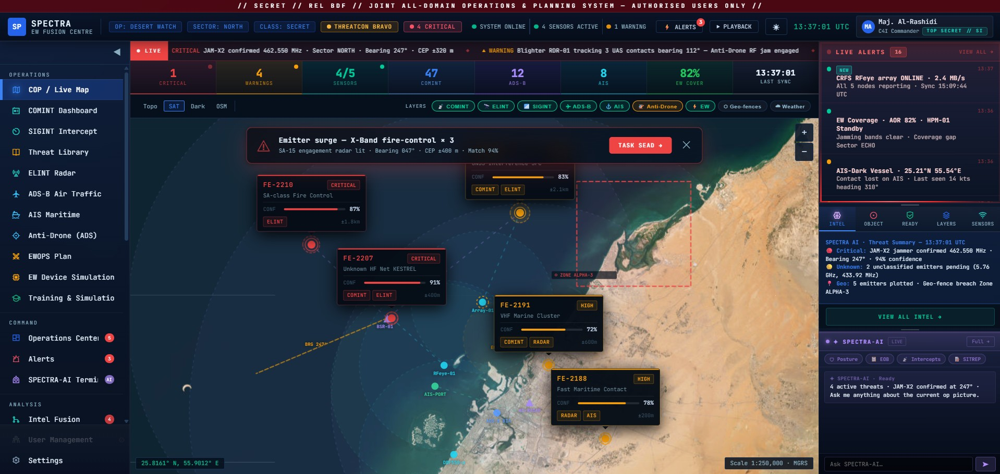
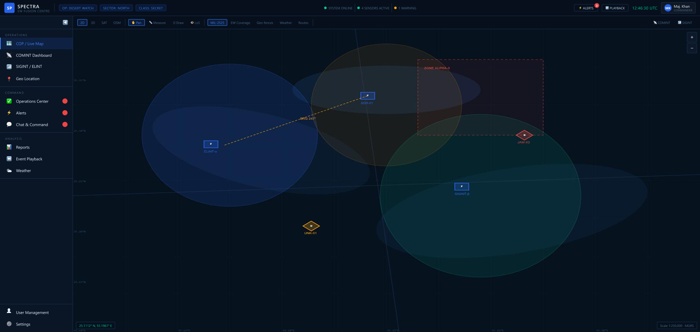
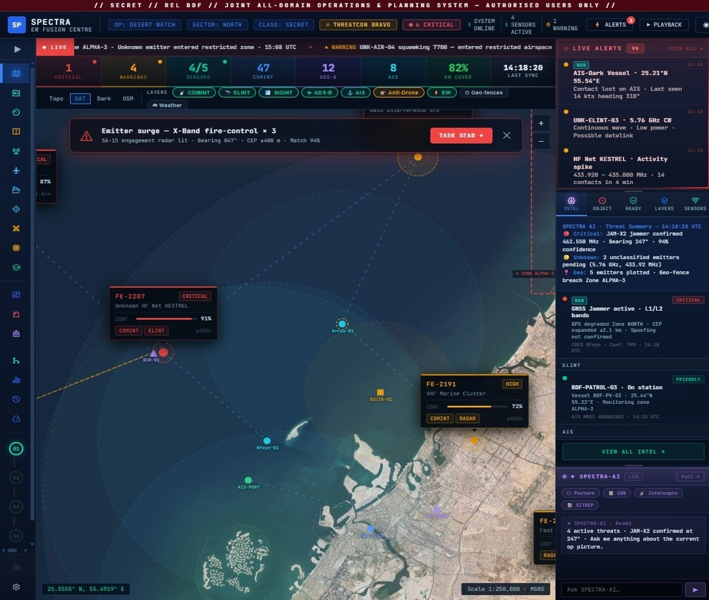
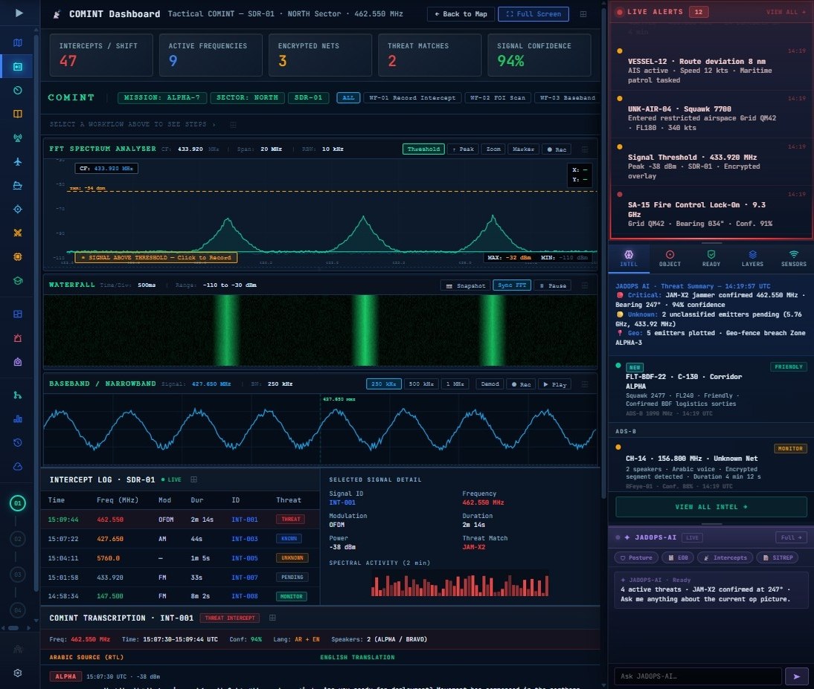
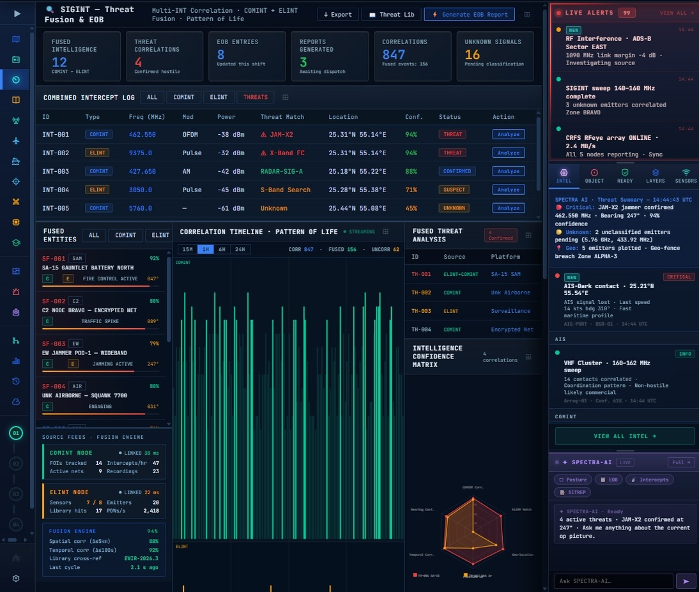
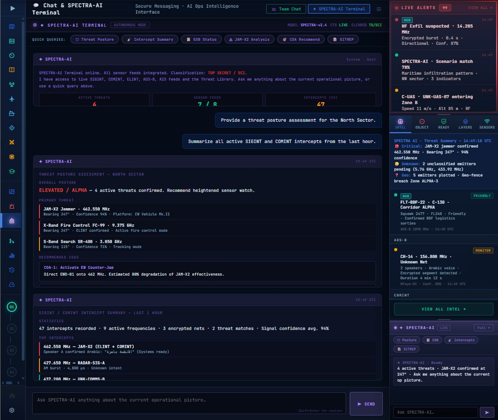
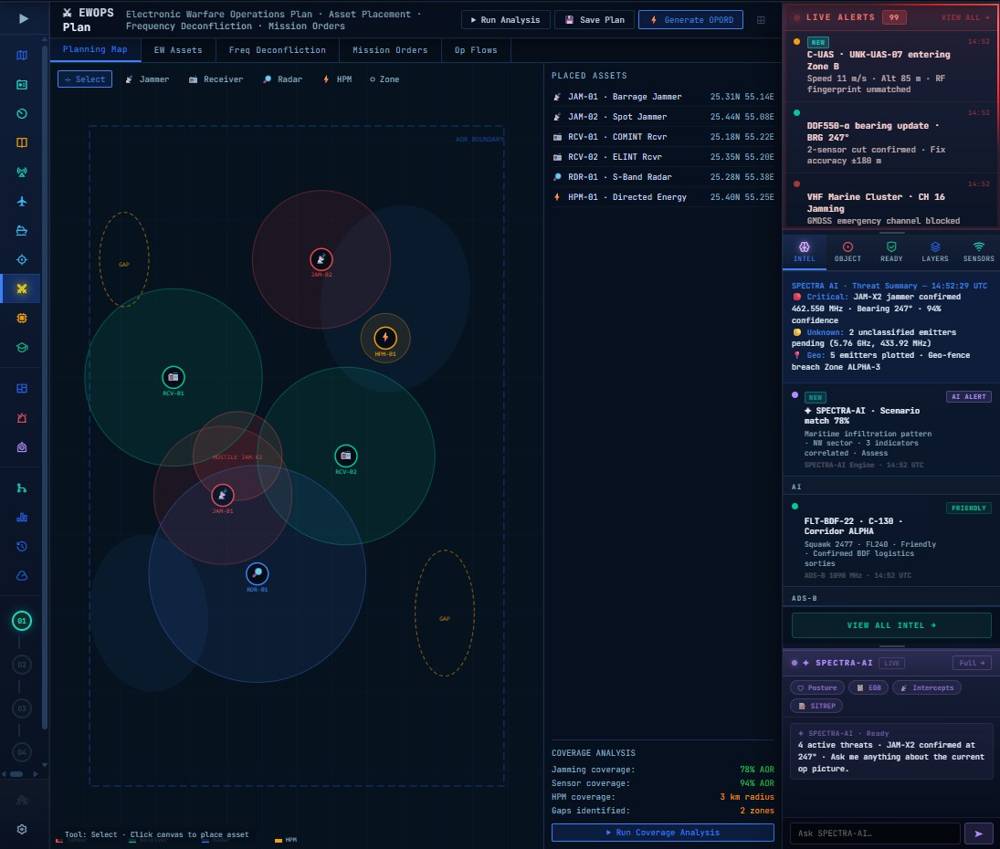

SPECTRA
Unified Intelligence Operations Platform. Real-time situational awareness, intelligence fusion, and operational decision-making through a single integrated interface designed for mission-critical environments.
On this page: Overview • Discovery & Constraints • Challenge • Users • Problems • Principles • IA • Design System • Impact & Outcomes

Unifying fragmented operations
Problem
Operators worked across 4–6 disconnected tools with different workflows, alert models, and navigation patterns. Cognitive switching cost slowed real-time decision-making.
Solution
Built a unified platform bringing signal monitoring, intelligence analysis, air traffic, and command workflows into one consistent experience. 15+ screens with a single cognitive language.
Outcome
Delivered a production-ready design system and interface architecture supporting three user types simultaneously while maintaining persistent operational situational awareness.
Research approach
Formal generative research such as interviews, usability testing, or detailed personas was not part of this delivery model. The team moved quickly on a live program where design needed to land against operational priorities and existing mission context.
Discovery inputs
Understanding came from stakeholder alignment sessions, review of legacy system documentation, analytics from current operational workflows, and consultations with domain experts. We also mapped support ticket themes and client feedback loops to identify the most urgent usability constraints.
Assumptions and validation
Key assumptions included the need for persistent situational awareness, the value of a single operational picture, and the importance of minimizing context switching. Those assumptions were validated through iterative client feedback, design reviews, and prototypes that were refined directly with stakeholders as the product evolved.
Designing for real-time operations
Business Challenge
Design Challenge
Three simultaneous roles
Signal Detection
Intelligence Fusion
Threat Assessment
Four structural challenges
Persistent Situational Awareness
An analyst drilling into deep screens must not lose awareness of the live operational picture. Alerts firing while focused on detail work are a real operational risk.
Consistent Cognitive Language
15 screens with different visual logic create mental overhead. Operators needed one coherent system learned once and applied everywhere.
Data Density Without Paralysis
Every screen carries significant information. The challenge was never simplifying by removing data—it was structuring complexity to prevent overload.
Detection-to-Action Speed
Every design decision had to shorten the path from "I see something" to "I have responded." Observation without clear action is a failure state.
Before vs. After
Before

After

Five core operational principles
Status First, Detail Second
Every screen opens with critical status information visible before interaction. An operator with 10 seconds gets essential context.
The Right Panel Never Leaves
Persistent right column showing live alerts and operational picture on every screen. The operator's peripheral vision is always active.
Color Means Operational Status
Red = critical threat. Amber = high/suspect. Cyan = monitoring. Green = safe. This semantic system is fixed across the entire platform.
Every Data Point Has Action
Nothing is pure observation. Every threat has Investigate and Acknowledge. Every intercept has Analyze and Record. The interface is a decision instrument.
AI as an Instrument
The AI terminal feels like a command interface integrated into operations—not a chatbot. Structured responses, classification labels, authority.
Unified operational structure
Single unified intelligence operations platform
Built before screen work began
Color Tokens
JADOPS uses a compact semantic palette: core surfaces (--bg, --panel), operational accents (--acc2: blue for primary, --warn: amber, --red, --green, --teal), and text hierarchy (--txtb: bright, --txt: muted, --dim: secondary). All colors mapped to CSS variables for consistency.
#07101e
#0d1a2b
#3b82f6
#ef4444
#f59e0b
#00c896
Typography
Monospace-first (JetBrains Mono) at 11.5px base. Headers 12–13px, labels 8–9px. High x-height ensures legibility at small sizes. Letter-spacing ±0.5px used for hierarchy. No anti-aliasing penalties at compact scales.
Button / Action System
Compact module buttons (`.mod-btn`): transparent default, 1px border with var(--border), hover→--acc2. Primary variant adds subtle bg rgba(37,99,235,.15). Padding 3px 10px, border-radius 2px, font-size 9px, zero shadow.
Card Patterns
KPI cards and panel cards use var(--panel) background, 1px solid var(--border), border-radius 4px, padding 10–12px. Task cards add left border accent for severity. No shadow; subtle contrast achieved through borders and background opacity.
Badges & Severity
Status badges use minimal borders + subtle bg: `.badge-green`, `.badge-warn`, `.badge-red`, `.badge-blue`. Padding 1px 6px, border-radius 2px, font-size 8px. Applied to tables, alerts, and inline status. Semantic color hierarchy baked in.
Layout & Spacing
Grid-based with compact spacing: sidebar 200px, collapsed 56px, right panel 280px, header 44px. Content padding 12px. Card gaps 8px, module padding 12px, row padding 6–10px. Flex and CSS grid align items. No margin collapse.
Alert States
Action Buttons
Status Chips
Entity Tags
Confidence Levels
Form Elements
Key screen showcase

Common Operating Picture
Unified dashboard showing live tactical picture. All operators, analysts, and commanders access the same intelligence view with role-specific detail levels.

COMINT Dashboard
Dedicated communications intelligence workspace. Deep analysis capabilities with spectrum visualization, frequency hop detection, and transcription management.

Threat Fusion
AI-powered intelligence correlation. Automated threat assessment combining SIGINT, ELINT, and tactical data. Machine confidence paired with analyst judgment.

JADOPS-AI Terminal
Conversational intelligence interface. Analysts query the system in natural language. AI returns structured threat assessments with confidence levels and source attribution.

EW Planning
Electronic Warfare planning and execution. Mission design, frequency allocation, and real-time adjustment. Coordinates with COMINT and air traffic operations.
Tradeoffs and rationale
Persistent Right Panel
Alternative
Full-bleed content with notification overlays
Decision
Always-visible right panel with live alerts
Tradeoff
280px content space cost per screen vs. uninterrupted awareness
AI Terminal as Primary
Alternative
Floating widget, supplementary feature
Decision
Primary navigation item in Command group
Tradeoff
Signals AI-assisted analysis is core workflow, not optional
Waterfall Display vs. Log
Alternative
Simple chronological intercept log
Decision
Live spectrum waterfall showing frequency behavior
Tradeoff
Higher implementation complexity vs. pattern visibility
Flat Navigation
Alternative
Grouped hierarchy with expandable sections
Decision
Flat single-level sidebar, all modules always visible
Tradeoff
Vertical sidebar space vs. predictable one-click access
Bilingual Transcription
Alternative
Source language only, separate translation view
Decision
Arabic and English side-by-side with threat tags below
Tradeoff
Layout complexity vs. seamless conversation reading
From operational brief to production system
Requirements arrived as operational briefs written in military domain language. Translated into design problems and presented back to stakeholders as annotated wireframes before moving to high fidelity. Client stakeholders validated structure before visual decisions were locked. Maintained living Figma component library for development handoff with exact specifications for spacing, color tokens, interaction states, and responsive breakpoints.
What was delivered
Design System
Complete component library with 40+ elements, all states, and interaction specifications
15+ Screens
High-fidelity operational interfaces ready for development handoff
Interaction Specifications
Detailed interaction patterns, animations, and state transitions documented
Information Architecture
Complete navigation structure, user flows, and task mapping across all roles
Edge Case Documentation
Failure states, error handling, and exceptional operational scenarios
Figma Component Library
Production-ready design tokens, responsive components, and developer handoff assets
What the platform enables
One Unified Platform
Replaces 4–6 specialist tools with a single integrated system. Operators access SIGINT, ELINT, ADS-B, AIS, and EW planning through one consistent interface.
Consistent Operational Language
Same interaction patterns, color semantics, and navigation logic across all 15 screens. Operators learn once and apply everywhere, reducing cognitive overhead.
Reduced Context Switching
Moving from COMINT to EW planning to threat analysis requires no interface relearning. Seamless task transitions enable sustained operational focus.
AI-Assisted Intelligence
JADOPS-AI terminal enables analysts to produce threat assessments through natural queries. Automation handles heavy correlation lifting while analysts maintain decision authority.
Production-Ready Design System
Complete Figma component library with 40+ elements, interaction specifications, responsive patterns, and developer handoff assets ready for immediate implementation.
Command-Level Situational Awareness
Commanders have persistent common operating picture updated in real-time. Highest-confidence threat correlations surface automatically without active polling.
Why This Project Matters
SPECTRA was a complex systems design challenge that required balancing information density, operational awareness, and decision-making speed across multiple user groups operating under time pressure and mission-critical constraints.
The project reinforced fundamental principles about designing for demanding environments: information architecture is not decoration—it directly impacts operational effectiveness. Cognitive consistency matters more when stakes are high. And design systems are not overhead—they're force multipliers that enable operators to maintain focus on the mission, not the interface.
The greatest satisfaction came from designing a platform used by highly trained specialists who have absolute clarity about what they need. Building for experts means no room for compromise. Every decision is tested against operational reality. The work reminds us why thoughtful, rigorous design is essential—not for aesthetic reasons, but because it translates directly into operational capability.
Designed for mission context
Created a single intelligence platform where situational awareness remains central across workflows.
Operational clarity
Reduced cognitive switching by unifying alerts, maps, and analysis in one consistent interface.
Reusable patterns
Established visual and interaction conventions that support future extensions without losing consistency.
Stakeholder-aligned finish
Designed against real operational priorities and delivered outcomes validated through client feedback loops.